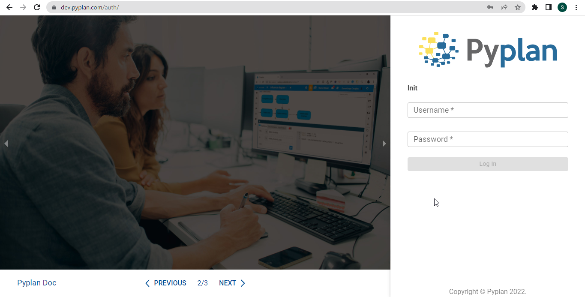

Acceso a Pyplan
Acceso a Pyplan#
Al acceder a la dirección de internet del servidor donde se encuentra instalado, se presenta la página de inicio para introducir las credenciales de acceso.
Pyplan posee la funcionalidad de «Single Sign On». Esto significa que los usuarios que pertenezcan a un servidor de dominio serán automáticamente reconocidos.

Una vez dentro de la plataforma se despliega la siguiente pantalla con sus elementos:
Menú de acceso a diversas funcionalidades:
Creación de una nueva aplicación, en el signo «+», ubicado arriba a la izquierda.
Tabs de acceso a las aplicaciones recientemente abiertas, aplicaciones propias y aplicaciones públicas.
Acceso al Chatbot de ayuda.
Acceso a recursos para el aprendizaje de Pyplan.
Cerrar la sesión en el servidor.